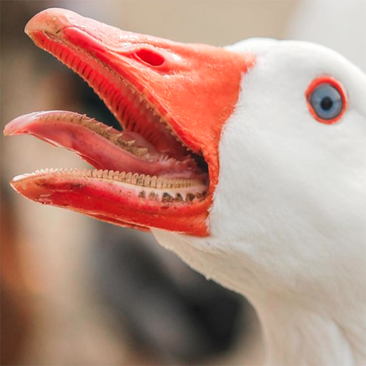
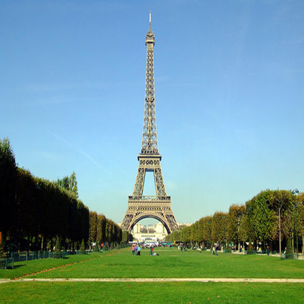
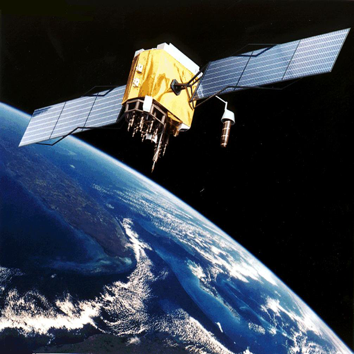

What do you want to build?

Domestic goose

Eiffel tower

Satellite
What do you want to build?
Domestic goose
Eiffel tower
Satellite
Choose what to send
Choose which planet to send to
Choose planet to communicate with
Enter your message: